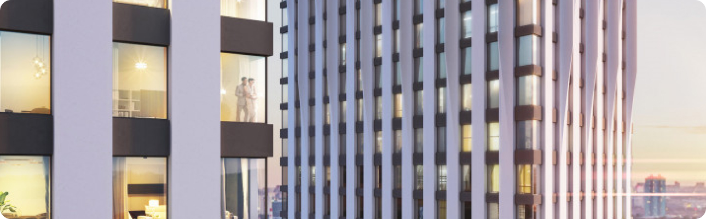

Wellton towers завоевали гран-при премии «Рекорды рынка недвижимости»

Высотный жилой комплекс получил главную награду девелоперской премии
В строительной отрасли, широко применение инертных материалов. Проще говоря материалов, имеющих сыпучую консистенцию. Без данных материалов строительство невозможно в принципе. Так как они являются основой для многих других.
Нерудные материалы для строительства. Инертные строительные материалы имеют природное происхождение. И являются, либо минералами в натуральном виде. Либо продуктами их переработки. Основные их виды знакомы всем.
Такой стройматериал как песок, в представлении не нуждается. Залегает в виде полезного ископаемого. Добывается в готовом виде или выделяется из гравийно-песчаной смеси (ГПС). Методом промывки, на специальных горнодобывающих предприятиях. Используется как наполнитель, для приготовления: различных марок бетона, растворов для выполнения кладки, штукатурки, стяжки пола и других. Также добавляется в качестве дополнения в: гипсовые смеси, клеевые составы для плитки, гипсокартона и другие. Гравийно-песчаная смесь (ГПС). Добывается в готовом виде в карьерах. В основном является сырьем для выделения и изготовления, таких материалов как: песок, гравий, щебень, отсев. Но также, применяется в виде готового материала. Для подсыпки оснований под фундаменты, бетонные площадки, дороги.
| Место | Название | Местонахождение |
|---|---|---|
| 1 | ТПК Макс Авто Крым | пгт. Зуя |
| 2 | ООО Бетон Пром | г. Керчь |
| 3 | ТПК Крым Бетон Авто | г. Симферополь |
| 4 | ООО Владислав Проф Бетон | пгт. Зуя |
| 5 | ООО Бетон Пром | г. Керчь |
| 6 | ТПК Крым Бетон Авто | г. Симферополь |
Высотный жилой комплекс получил главную награду девелоперской премии
- В строительной отрасли, широко применение инертных материалов. Проще говоря материалов, имеющих сыпучую консистенцию. Без данных материалов строительство невозможно в принципе. Так как они являются основой для многих других.
- Нерудные материалы для строительства. Инертные строительные материалы имеют природное происхождение. И являются, либо минералами в натуральном виде. Либо продуктами их переработки. Основные их виды знакомы всем.
- Такой стройматериал как песок, в представлении не нуждается. Залегает в виде полезного ископаемого. Добывается в готовом виде или выделяется из гравийно-песчаной смеси (ГПС). Методом промывки, на специальных горнодобывающих предприятиях. Используется как наполнитель, для приготовления: различных марок бетона, растворов для выполнения кладки, штукатурки, стяжки пола и других. Также добавляется в качестве дополнения в: гипсовые смеси, клеевые составы для плитки, гипсокартона и другие. Гравийно-песчаная смесь (ГПС). Добывается в готовом виде в карьерах. В основном является сырьем для выделения и изготовления, таких материалов как: песок, гравий, щебень, отсев. Но также, применяется в виде готового материала. Для подсыпки оснований под фундаменты, бетонные площадки, дороги.
Высотный жилой комплекс получил главную награду девелоперской премии
Wellton towers — это три высотных жилых башни общей площадью порядка 80 тыс. кв. м, поставленные на единый стилобат. В нем расположены инфраструктурные объекты, а на крыше разбит сквер.
Башни отличаются уникальными фасадами, к созданию которых привлекались дизайнерская студия Артемия Лебедева и проектное бюро голландского архитектора Поля де Врума.
В строительстве жилого комплекса «КРОСТ» применяет технологии собственного промышленного комплекса, в том числе высокотехнологичные строительные материалы и конструкции, произведенные на своих предприятиях.
Завершение строительства комплекса намечено на 2021 год.
Wellton towers — это три высотных жилых башни общей площадью порядка 80 тыс. кв. м, поставленные на единый стилобат. В нем расположены инфраструктурные объекты, а на крыше разбит сквер.
Башни отличаются уникальными фасадами, к созданию которых привлекались дизайнерская студия Артемия Лебедева и проектное бюро голландского архитектора Поля де Врума.
В строительстве жилого комплекса «КРОСТ» применяет технологии собственного промышленного комплекса, в том числе высокотехнологичные строительные материалы и конструкции, произведенные на своих предприятиях.
Завершение строительства комплекса намечено на 2021 год.